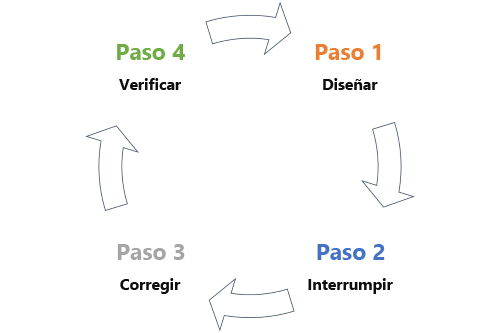

Introducción al Modelo de Amenazas
El modelo de amenazas es una herramienta fundamental para identificar y mitigar riesgos en el desarrollo de software. Al adoptar este enfoque, se pueden crear aplicaciones más sólidas y resilientes ante posibles ataques.
Creación de Software Seguro
Es esencial utilizar estándares y componentes seguros para asegurar la integridad y la seguridad de las aplicaciones. De esta manera, se evitan vulnerabilidades que podrían poner en riesgo su funcionamiento.
Impacto de las Amenazas
La ausencia de medidas de seguridad puede acarrear pérdidas económicas, dañar la reputación y generar riesgos legales significativos. Por otro lado, la implementación de estrategias proactivas puede reducir considerablemente estos riesgos.

Herramientas y Mejores Prácticas
- OWASP Top 10: Lista de las amenazas más comunes.
- Snyk: Identificación de vulnerabilidades en dependencias.
- SonarQube: Herramienta de análisis de código.
Implementación de un Software Seguro
La implementación de un software seguro requiere una comprensión profunda y una gestión eficaz de los riesgos relacionados con su desarrollo y despliegue. Para alcanzar este objetivo, es fundamental adoptar un enfoque estructurado que abarca la identificación de riesgos, el análisis de amenazas y la aplicación de medidas de mitigación apropiadas, a continuación, listo los pasos clave para lograrlo:
- Identificación de riesgos
- Comprensión de amenazas
- Desarrollo de estrategias para mitigar dichos riesgos
- Evaluación continua.
- Formación y concienciación.
- Uso de herramientas y estándares.
Procesos y Actividades en la Implementación de un Software Seguro
La implementación de un software seguro se enfoca en una serie de procesos y actividades que abarcan todo el ciclo de vida del desarrollo de software (SDLC). Se integra la seguridad como un elemento fundamental, desde la fase de planificación hasta el mantenimiento, a continuación, listo los principales procesos y actividades involucrados:
- IPlanificación y Análisis de Requisitos.
- Diseño Seguro.
- Desarrollo Seguro.
- Pruebas de Seguridad.
- Despliegue Seguro.
- Mantenimiento y Monitoreo.
- Capacitación y Concienciación.
Conclusión y Recursos
La seguridad en software no es opcional; es una responsabilidad compartida. Consulta los siguientes recursos para profundizar en el tema:
Sitio oficial de OWASP